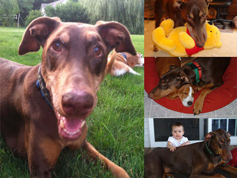

December 2012

Hi there - my name is Sadie! I am almost 11 years old. I was born back in January 2002. I have been a pampered pet since I was 3 years old. I met one of the nice pet sitters as she walked by my house while on a pet sit in my neighborhood. I fell in love with her since she brought me treats everyday! Pampered Pets come to my house and take care of me and my sisters while my parents go out of town. I am the most lovable Doberman. As you can see from my picture I am a gentle giant and I really think I was meant to be a lap dog! My owners try so hard to keep my off the furniture. Since I am so old now and in ill health, they are starting to take it a little easy on me, but they still won't let me sleep on the bed! I need to work on that :)I love being chased - i think it is fun to take things that belong to the kids and have them chase me. I don't hurt anything, I just love the chase! I also love to be outside especially in the summer. I love to lay on the hot driveway and soak up the heat. I miss my daily walks - I have a bum leg now and can't go for my walks anymore. But my mom used to walk me 3 miles every day and in people miles we walked over 10,000 miles in my lifetime! |